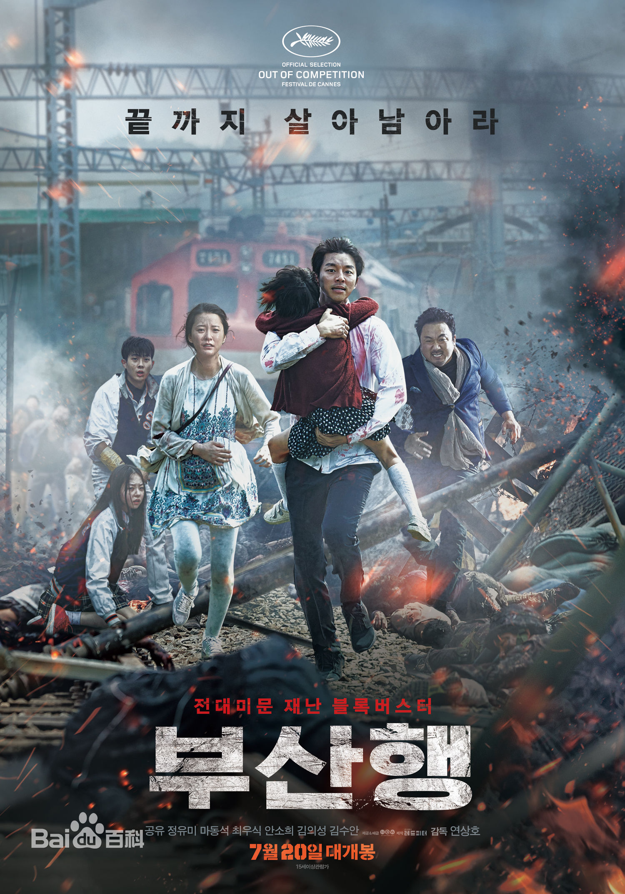

釜山行

剧情简介：
证券公司基金管理人石宇（孔侑 饰）光鲜精干，却也是个重利轻义之徒。妻子为此与之决裂，女儿秀安（金秀安 饰）则对如此自私的父亲越来越失望，决定前往釜山和母亲生活。在秀安生日这天，石宇抽出时间陪伴女儿登上开往釜山的特快列车。而与此同时，城市四处出现了极为可疑的暴动事件。政府极力洗白无法掩盖丧尸肆虐的事实，即便懵然无知的列车乘客也因为不速之客的到来而堕入恐慌绝望的地狱中。开车的刹那，一名感染者冲入车厢，而她很快尸变并对目光所及之处的健康人展开血腥屠杀。未过多久，丧尸便呈几何数爆发性地增长。石宇被迫和幸存者的乘客们在逼仄的空间中奋力求生。 通往釜山的遥遥旅途布满杀机，危难时刻每个幸存者的人性也承受巨大的考验……
影评：
《釜山行》--人性的弱点
生而为人，总不能沦为行尸走肉，总要和它们有所不同。 恶是摧枯拉朽的，而善却像蜗牛一样，慢。